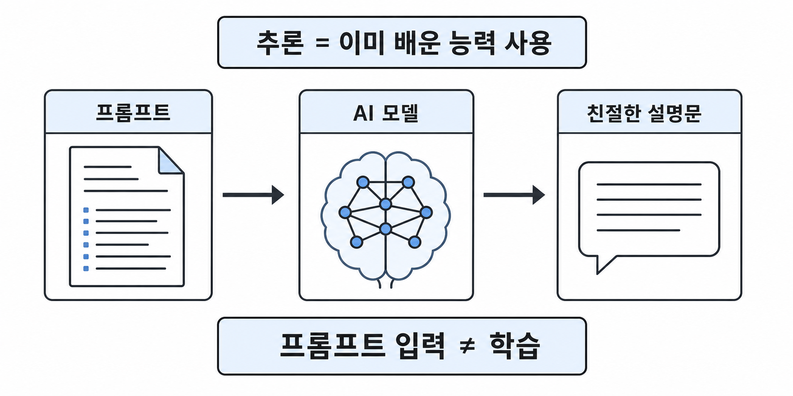
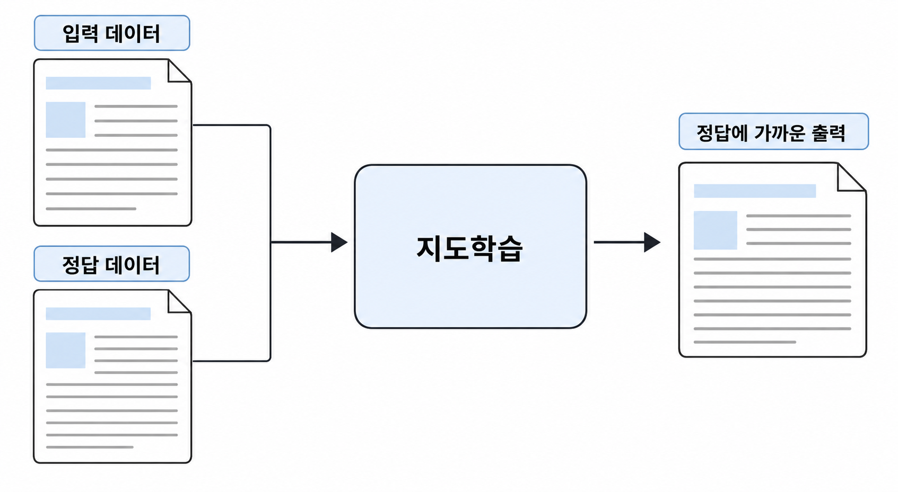
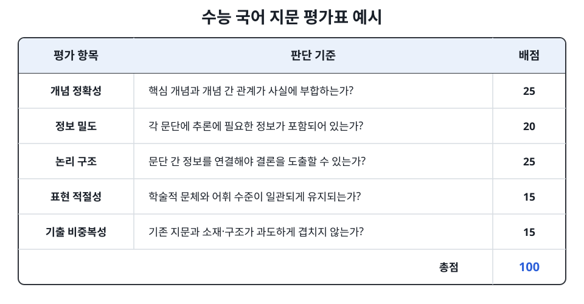
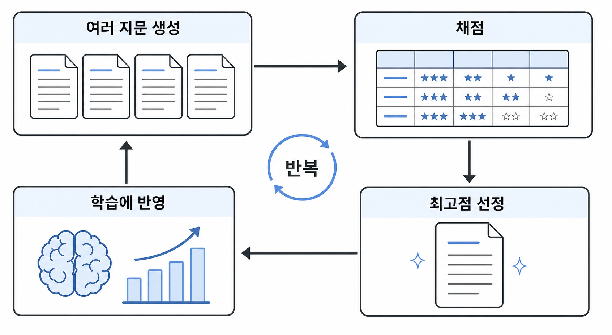
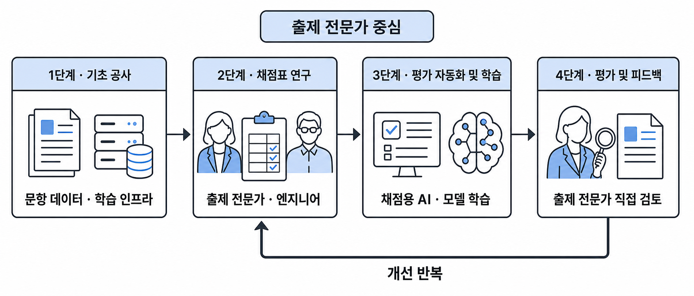

Roadmap
조직 차원의 AI 전환을 향한 기술 연구·개발 로드맵 제안
문항 출제는 단순한 글쓰기나 지식 노동이 아닙니다. 정돈된 문장 안에는 수험생의 사고를 특정 방향으로 유도하기 위한 논리적 함정이 정교하게 설계되어 있습니다. 수험생은 문항을 해결하는 과정에서 자신의 판단을 검토하고 수정하며, 이를 통해 사고 과정의 오류를 확인하거나 새로운 관점을 얻게 됩니다.
하지만 시간이 흘러 수능이 무르익을수록 학생들은 이러한 함정들에 익숙해지고, 이전과 같은 패턴으로는 더 이상 학생들에게 착오를 일으키지 못하게 됩니다. 따라서 문항의 경쟁력을 유지하기 위해 출제 전문가들은 이전보다 더욱 정교하고 예측 불가능한, 그러면서도 평가원의 출제 경향에 부합하는 논리적 장치를 설계할 필요성이 커지게 되었습니다.
그러나 '좋은 문항'이라는 것은 무엇일까요? 수험생들이 흔히 울부짖는 '평가원스러움'의 실체는 과연 무엇일까요? 학생들의 시행착오를 효과적으로 유발하는 문항들이 공통적으로 갖는 '패턴'은 과연 무엇일까요? 그리고 이러한 암묵적인 특성을 어떻게 명시적인 규칙으로 일반화할 수 있을까요?
이 글에서는 직관적이고 모호한 인지적 특성들을 데이터와 ML 알고리즘으로 규명하기 위한 방법론과, 이를 강남대성수능연구소 출제 전문가들의 생산성 향상으로 연결시키기 위한 기술 연구 로드맵을 제안하겠습니다.
1. 프롬프트 입력은 ‘학습’이 아니다 : 학습과 추론
흔히 AI에게 어떤 과제를 수행하라고 지시할 때 우리는 프롬프트를 입력합니다. 프롬프트는 규칙이 될 수도, 지시사항이 될 수도, 또는 이미지나 예시가 될 수도 있습니다. 그러면 AI는 지시에 따라 텍스트 또는 이미지 등 무언가를 출력해 내곤 합니다.
하지만 이것은 ‘학습’이 아닙니다. AI에게 참고 자료를 제공한다는 점에서 학습과 혼동하기 쉽지만, 프롬프트를 입력한다는 것은 주어진 입력 데이터를 바탕으로 무언가를 만들어 내는 AI의 능력을 ‘사용’하는 것이지, 없는 능력을 새로 만들어 내는 것이 아닙니다. 이렇게 학습을 마친 AI 모델을 사용해 결과를 생성하는 과정을 업계에서는 ‘추론’이라고 표현합니다.
예시를 들어 보겠습니다. 한 경제 주체의 활동이 그 거래에 참여하지 않은 제3자에게 의도치 않은 이익이나 손해를 주는 현상을 뜻하는 경제학 용어인 ‘외부효과’와 관련된 국어 독서 지문을 작성하도록 시키는 상황을 가정해 보겠습니다. 모델은 외부효과에 대해 이미 알고 있을 수도, 없을 수도 있습니다. 사용자는 이를 고려하여 외부효과에 대한 정의와 관련 참고 자료, 그리고 수능 국어 지문의 특징 등 완벽한 디테일을 담아 지문 작성을 요청했습니다.

하지만 모델이 내놓은 것은 평가원 특유의 학술적이고 밀도 높은 국어 지문이 아니라, 외부효과에 대해 친절하게 설명하는 설명문이었습니다. 아무리 수정 요청을 반복해도 이는 개선되기 어렵습니다. 왜냐하면 AI 모델에게 있어 자신이 출력한 그 설명문은 이미 완벽한 ‘국어 독서 지문’이고, 그렇게 이해하도록 ‘학습’되었기 때문입니다.
2. 학습이란 무엇인가? : ① 정답 데이터 따라 하기
그렇다면 학습이란 무엇일까요? 학습을 위해서는 AI에게 요청할 지시사항, 즉 입력 데이터와 함께 그것에 대한 ‘정답’ 데이터가 필요합니다. 그리고 AI 모델은 학습 과정에서 자신이 내놓은 출력이 정답 데이터와 비슷해지도록 훈련됩니다. 예를 들어 앞선 외부효과 지문 예시에서는 사용자가 작성한 프롬프트가 입력 데이터가 되고, 마찬가지로 사용자가 가장 이상적이라고 생각하는 실제 외부효과 지문이 정답 데이터가 됩니다. AI가 생성한 친절한 설명문은 이 정답 데이터와 큰 차이가 있고, 학습 과정에서 이 차이는 최소화되도록 교정됩니다.
이것을 업계에서는 ‘지도학습(Supervised Learning)’이라고 부릅니다. 정답 데이터라는 고정된 지점으로 AI 모델을 수렴시킨다는 의미입니다.

하지만 지도학습에는 큰 단점이 있습니다. 어렵고 긴 과제일수록 이 ‘정답 데이터’가 너무나 많이 필요하다는 것입니다. 예를 들어 수능 국어 독서 지문을 작성하는 과제의 경우, 1,000개 이상의 실제 지문이 확보된 후에야 유의미한 학습 결과를 얻을 수 있었습니다. 하지만 고품질 정답 데이터는 한정되어 있고, 대량 생산하기도 어렵습니다. 이에 따라 AI 연구자들은 다른 학습 기법을 고안하게 됩니다.
3. 학습이란 무엇인가? : ② 평가 점수 높이기
모델에게 정답을 직접 제공할 수는 없지만, 모델이 내놓은 출력물을 ‘채점’할 수 있으면 어떨까요? 사용자가 미리 다음과 같은 ‘수능 국어 지문 평가 채점표’를 만들어 놓고, 모델이 내놓는 지문을 이 채점표에 따라 채점하는 것입니다.

- 모델에게 한 번에 여러 개의 지문을 생성하도록 지시하고
- 각각의 지문에 대해 평가표에 따라 채점을 진행한 후
- 제일 점수가 높은 지문을 선정하고
- 다음부터는 3)에서 선정된 지문대로 생성하게끔 모델을 학습하고
- 1)부터 반복합니다.
이런 방법으로 학습시키면 AI 모델은 시간이 갈수록 평가표에 의한 채점 점수가 높아지는 방향으로 수렴할 것입니다. 이런 학습 방법을 업계에서는 ‘강화학습(Reinforcement Learning)’이라는 정식 명칭으로 부릅니다.

4. 연구 목표 1 : 모호하고 암묵적인 개념들을 측정 가능하게 바꾸기
강화학습이 성공하려면 무엇이 가장 중요할까요? 막대한 GPU 자원과 긴 학습 시간이 필요하지만, 가장 중요한 것은 3절에서 언급한 ‘채점표’입니다. 이때 ‘평가원스러움’이나 ‘논리가 탄탄하다’ 같은 추상적인 어휘 대신, 구체적이고 명확한 판단 기준이 필요합니다. AI 모델은 아주 똑똑하기 때문에, 채점표를 어설프게 만들면 반드시 그 구멍을 찾아 파고듭니다.
가령 사용자가 생각하기에 ‘좋은’ 수능 국어 지문은 다음과 같다고 칩시다.
- 글자 수가 1,500자 이상이어야 한다.
- 이상치와 결측치처럼 개념 간의 대립 구조가 풍부해야 한다.
이 채점표에 따라 학습된 모델은 다음과 같은 지문을 출력할 수 있습니다.
이 모델은 잘못이 없습니다. 채점표의 기준대로 학습했기 때문입니다. 모델은 가장 높은 점수를 받기 위해 학습했지만, 사용자가 의도한 좋은 지문과는 전혀 다른 결과에 도달했습니다. 이렇게 의도하지 않은 방식으로 평가 기준의 허점을 이용해 높은 점수를 얻는 현상을 ‘보상 해킹(Reward Hacking)’이라고 부릅니다.
보상 해킹의 유형은 과제마다, 상황마다 매우 다양하게 나타납니다. 따라서 강화학습이 성공하기 위해서는 풀고자 하는 문제의 전문가와 협업하여 채점표를 최대한 정교하고 빈틈없이 설계해야 합니다.
결국 좋은 문항을 만들어 내는 AI를 만들기 위해서는 ‘무엇이 좋은 문항인가?’, ‘무엇이 평가원스러운 것인가?’를 정확하게 정의하고, 이를 채점할 수 있는 기준을 정립하는 것이 무엇보다 중요합니다.
5. 연구 목표 2 : 개발자가 아닌, 출제 전문가 중심의 연구 프로세스 확립
앞서 설명한 것을 정리하면, 고품질의 AI를 학습시키기 위해서는 다음 두 가지가 전부입니다.
- 많은 양의 고품질 데이터
- AI의 생성물을 평가할 수 있는 채점 기준
GPU 클러스터링, 데이터셋 전처리, 학습 파라미터 설정 등 엔지니어링 영역은 그 이후입니다. 따라서 강남대성수능연구소의 성공적인 AI 전환을 위해 다음과 같은 연구 로드맵을 제안합니다.
1단계 : 기초 공사
- 수십 년간 쌓인 다양한 출처의 기출 문항을 기계가 이해하고 학습할 수 있는 형태로 정리
- 학습 인프라 준비: GPU 서버, 학습 코드 작성 등
- 2026년 7월을 기점으로 이 공사는 대부분 종료되었습니다.
2단계 : 평가 기준(채점표) 연구
- 각 과목별로 ‘무엇이 좋은 문항인가?’를 측정할 수 있는 기준 마련
- 항목, 배점, 평가 기준 등 교육평가적 관점에서 객관적으로 문항의 품질을 측정할 수 있는 시스템 마련
- 출제 전문가와 엔지니어 간 소통 세션을 정기적으로 마련
3단계 : 평가 자동화 및 학습 진행
- 문항을 ‘생성’하는 AI를 만들기 위해 문항을 ‘평가’하기 위한 LLM 프롬프트를 각 과목 팀에서 연구
- ‘평가’를 위한 채점용 AI는 별도로 학습하지 않고 GPT, Gemini 등을 활용
- 2단계에서 마련된 평가 기준에 따라 자동 채점이 가능하도록 각 과목 전문가들의 연구와 테스트를 주요 과업으로 제시
- 완성된 학습 프로세스를 인계받아 엔지니어가 실제 모델 학습 진행
4단계 : AI 모델 평가 및 피드백
- 학습 완료 후 AI가 생성한 문항을 각 과목 전문가들이 직접 분석하고 피드백
- 2단계의 채점 기준을 어떻게 보완·개선할 수 있을지 후속 연구
- 개선 사이클 반복

6. 결론 및 마무리
문항 콘텐츠라는 고부가가치 산업의 특성상, AI를 출제·검토 등에 활용할 수 있는 경로는 무궁무진하다고 생각합니다. 하지만 이를 위해서는 개발자가 아니라, 기존에 각 과목을 지탱하던 출제 전문가들의 전문성과 연구 역량이 필수적입니다.
강남대성수능연구소의 AI 도입이 단순히 겉보기에 그치지 않고 실질적인 가치를 창출하기 위해, 이러한 선순환과 피드백 체계를 확립하기 위한 조직적 투자를 지속해 나갈 것을 건의드립니다.